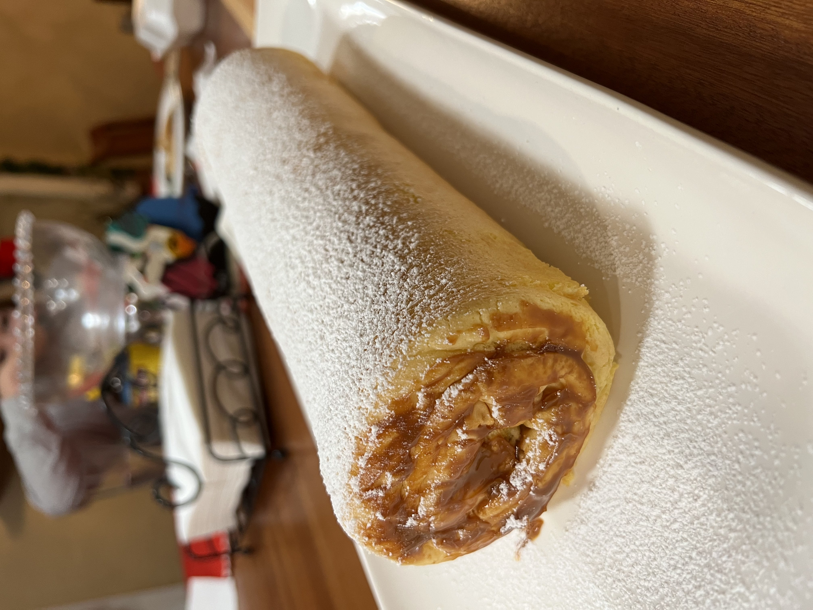

Pionono Recipe

This recipe is a wonderful Peruvian decliacy, quick and painless to make!
Ingredients
- Nonstick cooking spray
- 6 eggs, at room temperature
- 1/3 cup of granulated sugar
- 1 tsp vanilla extract
- 1 tsp grated orange peel
- 1/8 tsp salt
- 1/3 cup self-rising flour
- 4 tbsp powdered sugar, sifted
- 3/4 cup Dulce de Leche
Steps
- Preheat oven to 350° F. Spray 15 x 10-inch jelly roll pan with nonstick cooking spray; line with parchment paper.
- Beat eggs in medium mixer bowl on medium speed until creamy and thick. Add granulated sugar one tablespoon at a time. Continue beating for about 5 to 7 minutes. Mixture should be thick and creamy. Add vanilla extract, grated orange peel and salt. Beat for 10 seconds.
- Sift flour into the egg mixture, carefully folding in with a spatula. Pour into prepared jelly roll pan; spread evenly with a spatula.
- Bake for 12 to 15 minutes or until cake springs back when pressed. Remove from oven; let rest for 5 minutes.
- Lay out a clean kitchen towel that’s larger than the jelly roll pan; sprinkle with 2 tablespoons powdered sugar. Flip cake onto towel, gently peel off parchment paper and roll cake in towel starting from short side. Set aside; cool completely for 2 hours.
- Unroll cake; cut off rough borders with a sharp serrated knife.
- Warm dulce de leche in a small saucepan over medium-low heat, stirring constantly, for about 3 minutes or until a thick pourable consistency has been reached.
- Pour dulce de leche over cake, spread evenly with a spatula. Roll cake without towel and transfer to a small platter or large serving plate. Refrigerate for 1 hour.
- Sprinkle with remaining 2 tablespoons powdered sugar. Slice with sharp serrated knife or unflavored dental floss and serve with berries.